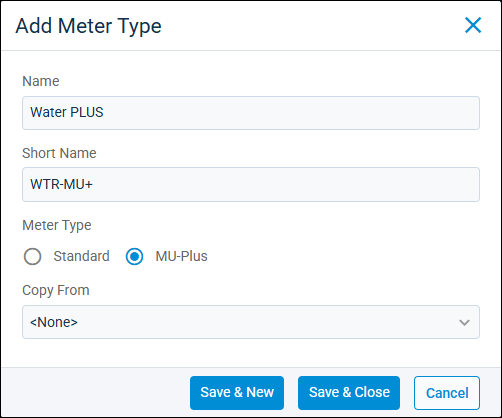

Source: https://rmxhelp.rentmanager.com/Topics/Express/Action/MU-Meter-Types-Add.htm
Add a Meter Type
Metered Utilities (MU) allows you to bill tenants for usage of utilities such as gas, electric, water, and sewer. With meter types, you can add custom utility information to Rent Manager. There are two meter types available to add in Rent Manager: Standard and Metered Utilities Plus (MU-Plus).
Standard meter types are used to calculate utility charges with fixed consumption ranges and utility rates. These meters calculate one charge based on the total consumption, which can be a tiered rate.
MU-Plus provides a more customizable way to calculate tenant billing for utility consumption. These meter types can do blended rates, medical/income discounts, and many other complex billing calculations. Furthermore, Metered Utilities Plus provides more transparent usage statements to tenants.
More Information
Adding a meter type is only one part of setting up Metered Utilities in Rent Manager. If you are setting up Metered Utilities for the first time, refer to Set Up Metered Utilities.
Related Privileges
| Group | Privilege | Column |
|---|---|---|
| Utilities | Meter Types | Add, View |
| Metered utilities | Enabled |
For more information, refer to Control User Access.
To add a meter type, do the following:
-
Go to
 arrow_forward Services arrow_forward Metered Utilities arrow_forward Meter Types.
arrow_forward Services arrow_forward Metered Utilities arrow_forward Meter Types.
The Meter Types page displays. -
Click
 Add Meter Type.
Add Meter Type.
-
Enter information into the following fields:
Field Description Copy From
Copy the information from an existing meter type into the new meter type. You can only use other meters of the same type as a template for your new meter. If creating a new Standard meter type, only existing standard meter types are available. For MU-Plus meter types, only existing Metered Utilities Plus meter types are available as templates.
Meter Type
Determines how the meter type calculates.
Standard
Utility charges are calculated with fixed consumption ranges and utility rates. These meters calculate one charge based on the total consumption, which can be a tiered rate. For more information, refer to Standard Meter Type Details (Page).
MU-Plus
Utility charges can be customized to do blended rates, medical/income discounts, and many other complex billing calculations. Furthermore, Metered Utilities Plus provides more transparent usage statements to tenants.
You may need to use a MU-Plus meter type for the following circumstances:
- If you need to perform complex calculations like rounding, rate blends, if statements, min/max, and per day fees.
- If you have low-income or medical tenants who qualify for billing discounts.
- If you have different rate zones, meaning tenants in different locations pay different amounts.
- If you are required by law to provide detailed usage statements to tenants that itemize the charge into its smaller components.
For more information, refer to MU Plus Details (Page).
Name
A unique name used to describe what the meter type is used for.
Short Name
An internal reference that identifies the meter type on utility reports.
-
Click Save & Close to complete the meter type creation process and close the pop-up. Alternatively, click Save & New to finish adding the meter type and refresh the pop-up to create another type.
The meter type is available to be selected on any utilities going forward.